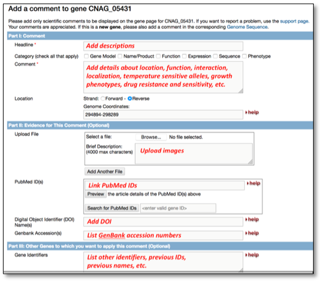

Fill out the comment page (on the right). Note: you can link PubMed IDs, update gene names, add gene function, upload files, etc.

What is useful to add as a user comment?
Any information you wanted to know about a gene before you started working on it... but please do not duplicate automatically generated information, e.g. protein length, or the top BLAST hit. You can submit published and unpublished information. If using unpublished data, please make sure to indicate how you arrived to these conclusions.
Have too many user comments to submit?
No problem! Download the bulk user comment form, fill it out, and send it back to help@fungidb.org
Useful user comment examples:
Gene names, including synonyms, e.g. 'Purine Phosphoribosyl Transferase, is also known as HPRT, HGPRT, Hypoxanthine Phosphoribosyltransferase, Ppt1, Ppt-1, etc.' Such information is critical if someone is searching for HPRT. Include reference for each name if possible.
References, e.g. 'See PMID ##### for functional characterization of this gene.' Note that it is helpful to link all key papers, not just those from your lab! Same references can be used for multiple genes.
Functional characterization, e.g. This 'hypothetical protein' has been shown to be a copper transporter based on... Contact for further details' . Note that such information is most useful if associated evidence/contact is provided (can paste/upload text as an attachment).
Subcellular localization e.g. 'GFP tagging demonstrates that this protein localizes to the mitochondrion, as shown in the attached images'. Note that images can be attached to User Comments.
Structural information on annotated gene models, e.g. 'The predominant transcript initiation site for this gene has been mapped to ~561 nt upstream of the annotated ATG by 5'RACE and RNAse protection. This conclusion is consistent with available RNAseq data, but differs from the reference annotation' Note that in addition to corrections to the reference annotation, experimental evidence supporting the reference annotation or offering insights into alternative transcripts is also very helpful.
Have questions? Send us an email to help@fungidb.org
What is useful to add as a user comment?
Any information you wanted to know about a gene before you started working on it... but please do not duplicate automatically generated information, e.g. protein length, or the top BLAST hit. You can submit published and unpublished information. If using unpublished data, please make sure to indicate how you arrived to these conclusions.
Have too many user comments to submit?
No problem! Download the bulk user comment form, fill it out, and send it back to help@fungidb.org